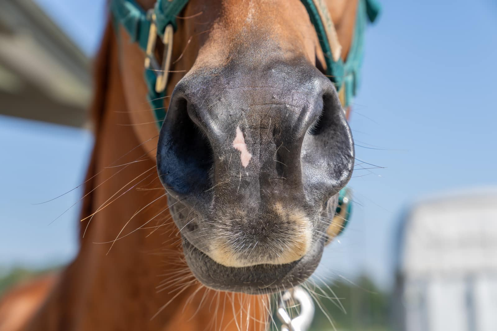
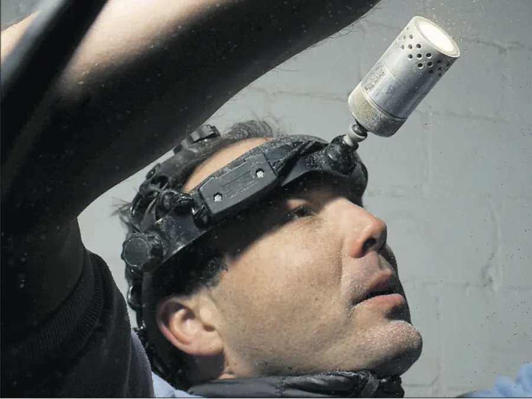
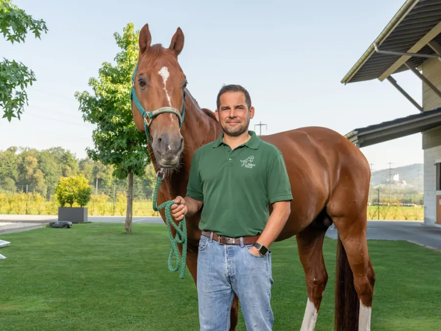
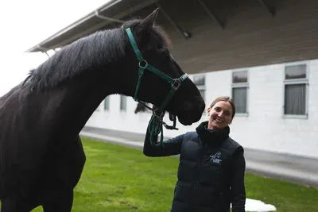
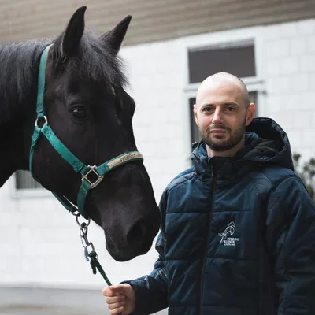

Zahnerkrankungen bereiten Schmerzen, erschweren die Nahrungsaufnahme und mindern das Wohlbefinden – oft lange unbemerkt. Machen Sie den Zahn-Selbsttest und erfahren Sie in 2 Minuten, ob eine Vorstellung sinnvoll ist und wie oft Ihr Pferd zur Prophylaxe sollte.

Der beste Schutz vor Zahnproblemen setzt an, bevor sie entstehen. Regelmässige Kontrolle und Prophylaxe halten das Gebiss Ihres Pferdes gesund – schmerzfrei, leistungsfähig und ohne teure Folgebehandlungen.
Routinemässige Kontrolle und Pflege in festen Intervallen – meist bequem bei Ihnen im Stall.
Vollständige Kontrolle der Maulhöhle – bei Bedarf mit 3D-Bildgebung des Kiefers. Erkennt Probleme früh, oft bevor Sie etwas bemerken.
Regelmässiges Abschleifen scharfer Kanten und Haken, die Zunge und Backenschleimhaut verletzen und das Kauen behindern.
Entfernung von Zahnstein zur Vorbeugung von Zahnfleischentzündung und Parodontitis – schonend und gründlich.
Pferde zeigen Zahnschmerzen kaum – ihr Fluchttierinstinkt lässt sie leiden, ohne zu klagen. Regelmässige Kontrollen erkennen Probleme früh, bevor sie schmerzhaft und teuer werden.
Bis ca. 5 Jahre: Zahnwechsel, Milchzahnkappen und Wolfszähne brauchen engmaschige Begleitung.
5–16 Jahre: Eine jährliche Kontrolle genügt in der Regel, um Haken und Fehlstellungen früh zu korrigieren.
Ab ca. 17 Jahren: Abnutzung, Lücken und EOTRH machen häufigere Kontrollen sinnvoll.
Bei Auffälligkeiten gilt immer: nicht auf den nächsten Termin warten – zeitnah abklären lassen.
Zeigt Ihr Pferd bereits Symptome – oder liefert der Selbsttest ein Warnsignal? Dann folgt eine gezielte Diagnostik und Therapie, rund um die Uhr auch im Notfall.
Gezielte Diagnostik und Therapie, wenn ein Befund vorliegt oder Ihr Pferd Schmerzen zeigt.
Behandlung veränderter oder entzündeter Zahnzwischenräume – eine häufige Ursache versteckter Schmerzen und von Futterstau.
Bei Infektionen an der Zahnwurzel – konservativ mit Antibiotika oder chirurgisch, je nach Befund und Schweregrad.
Diagnose und Therapie schmerzhafter Erkrankungen wie EOTRH sowie notwendige Zahnentfernungen – auch als 24h-Notfall.
Diese Anzeichen deuten auf mögliche Probleme im Maul hin. Erkennen Sie eines wieder, sollten Sie Ihr Pferd vorstellen.
Unser Zahnzentrum wird von international anerkannten Spezialisten geführt.

International renommierter Zahnexperte – spezialisiert auf komplexe Zahn- und Kiefererkrankungen des Pferdes.

Geschäftsführer der Pferdeklinik Niederlenz und Mitverantwortlicher des Zahnzentrums.

Teil unseres Zahnzentrum-Teams – engagiert in der Betreuung und Behandlung Ihres Pferdes.

Teil unseres Zahnzentrum-Teams – engagiert in der Betreuung und Behandlung Ihres Pferdes.
Ein paar kurze Fragen zu Vorsorge und möglichen Beschwerden. Am Ende erhalten Sie eine Einschätzung: ob eine Vorstellung im Zahnzentrum ratsam ist – und in welchem Rhythmus eine Prophylaxe sinnvoll wäre.
Ob als Ergebnis Ihres Selbsttests oder für die reguläre Vorsorge – unser Team berät Sie gerne und findet einen Termin, bei Ihnen im Stall oder in der Klinik.